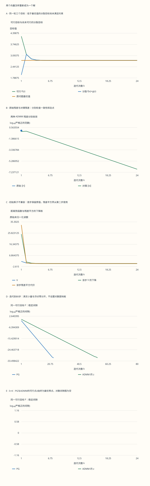

本页目录
凸优化 III · ADMM：把分裂变量重新接成一个解
先修：共轭与对偶、近端步与一阶方法。目标：自己推导两个子问题，辨认两种残差，并用势函数说明它们为什么趋于零。每个有限步还要分清可行目标、分裂目标与真正的对偶下界。
学习层：目标值更低，为什么反而还没有解好？
两位计算者分别处理容易的部分：一位拟合数据，一位把小坐标压成零。它们暂时可以交出不同的向量，乘子负责把分歧传回下一轮。问题在于：两份不同向量上的目标之和，未必对应任何合法答案。
实验把 PG 与 ADMM 放在同一个二次加 L1 问题上。先看首步分裂目标跌到最优值下方，再同时检查一致性残差、驻点残差和可行目标。改变初始乘子，还能看到证明中的“相邻两次最优条件”为什么需要注明起点。
无脚本对照：五幅图与下表都来自同一份六组固定记录。表内统一为ADMM最后一行；完整下载同时包含PG和每一步中间量。

| 预设 | 迭代 | 可行F(z) | 分裂目标 | 原始残差 | 对偶残差 | 势函数V |
|---|---|---|---|---|---|---|
| standard | 24 | 2.8125 | 2.8125 | 0 | 1.99920056e-07 | 3.99680289e-14 |
| long | 80 | 2.8125 | 2.8125 | 0 | 0 | 0 |
| inconsistent-dual | 24 | 2.8125 | 2.8125 | 0 | 1.60490418e-07 | 2.57571742e-14 |
| pg-unstable | 16 | 2.8125 | 2.8125 | 0 | 5.11795344e-05 | 2.61934474e-09 |
| small-rho | 24 | 2.8125 | 2.8125 | 0 | 0 | 9.86076132e-32 |
| allzero | 24 | 5.625 | 5.62499933 | 1.99920056e-07 | 0 | 3.99680289e-14 |
下载六组完整固定记录。表内两个目标不同时拥有原始可行性；残差、间隙与乘子各有单独定义。
每次实验导出所有向量、两种目标、乘子、残差、势函数及对偶证书。对数图只画严格正值；零、负的浮点读数保留在表中。PG 在旧点与新点的映射分别列出，避免把下一步的量误认成当前点的证书。
1. 拆开计算，但不改变原问题
本页的完整证明先处理有限维共识约束：\(f,g\) 真、闭、凸，存在鞍点 \((x^*,x^*,y^*)\)。也就是说，\(-y^*\in\partial f(x^*)\)、\(y^*\in\partial g(x^*)\)。原问题和分裂写法为
这里没有松弛约束；最终仍要让两个向量一致。实验固定 \(b=(3,-3/2)\)，取 \(f(w)=\|w-b\|^2/2\)、\(g(w)=\lambda\|w\|_1\)，所以
软阈值来自三个最优条件分支：正坐标满足 \(w_i-b_i+\lambda=0\)，负坐标满足 \(w_i-b_i-\lambda=0\)，零坐标要求 \(|b_i|\le\lambda\)。因此旋钮改变 \(\lambda\) 时，参照解也必须改变。
2. 对偶上升：先问内层最小值是否取得
对于 \(\min f(x)\)、\(Ax=c\)，定义 \(q(y)=\inf_x[f(x)+\langle y,Ax-c\rangle]\)。用 inf 而非 min，是因为下确界可能不取得。若某个 \(x_y\) 确实取得有限最小值，那么
因此 \(Ax_y-c\) 是凹函数 \(q\) 的超梯度；只有额外具备可微性，才可以写成梯度。一个方便的充分条件是 \(f\) 真闭且强凸：其共轭处处可微，\(q(y)=-f^*(-A^\top y)-\langle c,y\rangle\)，于是 \(\nabla q(y)=Ax_y-c\)。一般的收敛还需要步长条件。
“内层必须严格凸”并不正确。\(f\equiv0\)、\(y=0\) 时所有点都可取最小值；反过来，严格凸的 \(e^x\) 下确界为0，却没有最小点。在线性模型中，若 \(f(x)=a^\top x\)，则内层系数 \(a+A^\top y\) 非零时直接无下界，等于零时则处处最优。先检查取得与有限性，再谈算法更新。
3. 增广项增加了哪些曲率？
增广拉格朗日把一致性误差的平方加入目标。先看单块约束的乘子法：
若 \(x^+\) 精确最小化当前增广子问题，其最优条件是 \(0\in\partial f(x^+)+A^\top[y+\rho(Ax^+-c)]\)，即 \(-A^\top y^+\in\partial f(x^+)\)。更新后的乘子使驻点条件成立，但原始约束仍可能不满足。文献有时把这个驻点关系称为 dual feasibility；它与“某个候选点处的对偶函数有限”不是同一条检查。
二次项增加的 Hessian 是 \(\rho A^\top A\)。它在 \(\ker A\) 上为零：例如 \(A=(1,0)\)、\(f(x_1,x_2)=x_2\)，无论多大的 \(\rho\) 都挡不住 \(x_2\to-\infty\)。只有额外曲率、强制性或适当结构才能保证一般子问题可解。它也可能把原先可分的变量耦合起来。
4. 从配平方得到两块 ADMM
对共识问题定义 \(L_\rho(x,z,y)=f(x)+g(z)+\langle y,x-z\rangle+\rho\|x-z\|^2/2\)。ADMM 先解 \(x\) 块，再把新 \(x\) 放入 \(z\) 块，最后更新乘子。令 \(u=y/\rho\)，配平方给出
这里约定 \(\operatorname{prox}_h(v)=\arg\min_w[h(w)+\|w-v\|^2/2]\)。在有限维空间，真闭凸函数加上这个全空间二次项具有唯一最小值，所以本页共识模型的两步确实可解。一般 \(Ax+Bz=c\) 的二次项可能有核，不能直接照搬这条保证。
实验的两步具体变成 \(x_k=[b+\rho z_{k-1}-y_{k-1}]/(1+\rho)\)、\(z_k=\operatorname{soft}_{\lambda/\rho}(x_k+y_{k-1}/\rho)\)。初始 \(z_0=0\)、\(y_0=(d,-d)\)。固定 \(\rho\) 时 scaled 与原始写法完全等价；若途中更改 \(\rho\) 而想保持原乘子 \(y\)，必须同时令 \(u_{\rm new}=y/\rho_{\rm new}\)。实验改参会从头运行。
5. 两种残差来自两条不同的最优条件
采用标准矩阵约定在 \(A=I,B=-I\) 下的符号：
推导第二条：\(x\) 步给出 \(0\in\partial f(x_k)+y_{k-1}+\rho(x_k-z_{k-1})\)；把 \(y_{k-1}=y_k-\rho(x_k-z_k)\) 代入，就得到 \(0\in\partial f(x_k)+y_k-s_k\)。\(z\) 步同理给出第一条。故 \(r_k\) 检查是否一致，\(s_k\) 检查另一块是否满足最终的驻点条件。有些实现取 \(s\) 的相反数；范数相同，带符号等式必须跟着变。
首步默认值是 \(x_1=(1.5,-0.75)\)、\(z_1=(0.75,0)\)、\(y_1=(0.75,-0.75)\)，所以 \(r_1=(0.75,-0.75)\)、\(s_1=(-0.75,0)\)。两种残差都不是目标差。小 \(\rho\) 时 \(z\) 可能暂时不动，令 \(s=0\)，但 \(x-z\) 仍很大；因此不能只看一列。
6. 先用鞍点夹住分裂目标
记 \(p_k=f(x_k)+g(z_k)\)。鞍点的两个次梯度不等式相加给出下界；迭代点的两个次梯度不等式给出上界：
这正解释了 \(p_k\) 可以小于 \(F^*\)：只要 \(r_k\ne0\)，下界本来就允许负值。默认首步 \(p_1=63/32=1.96875\)，而可行目标 \(F(z_1)=135/32=4.21875\)，真正最优值是 \(90/32=2.8125\)。三者各自回答不同的问题，不能拿第一项当成已找到的更优解。
实验保留上下界及两边的余量，不只显示一条目标曲线。接下来要证明的是：残差变小且变量受控，使夹界两端都趋于零。
7. 一个能展开验算的距离势函数
对任意鞍点定义
次梯度单调性不是额外假设：对凸函数在两点的支撑不等式相加，便有 \(\langle a-b,p-q\rangle\ge0\)。分别用于 \(f\) 与 \(g\)，得到
现在把 \(y_{k-1}=y_k-\rho r_k\)、\(z_{k-1}=z_k+s_k/\rho\) 直接代入两个平方差：
最后一项不能凭感觉删去。要知道它的符号，需要再用一次相邻 \(z\) 点的最优条件。
8. 为什么一般初始化要从第二步开始？
当 \(y_{k-1}\in\partial g(z_{k-1})\) 且 \(y_k\in\partial g(z_k)\)，单调性给出 \(\langle z_k-z_{k-1},y_k-y_{k-1}\rangle\ge0\)。代入更新式即 \(-\langle r_k,s_k\rangle\ge0\)，于是
任意初始化可取 \(k_0=2\)，因为第一轮精确 \(z\) 更新已建立所需关系。若 \(y_0\in\partial g(z_0)\)，则可取 \(k_0=1\)；实验 \(z_0=0\) 时条件就是 \(|d|\le\lambda\)。不兼容的首步仍完整显示 \(V\)、交叉项和下降余量，但不假装获得了这条残差平方界。
非负级数有界推出 \(r_k\to0,s_k\to0\)；\(V\) 有界使 \(y_k,z_k\) 有界，进而 \(x_k=z_k+r_k\) 有界。第6节夹界随之推出 \(p_k\to F^*\)。还可由有限维紧性取聚点，再用次梯度图的闭性得到该聚点的鞍点条件；对这个鞍点的 \(V_k\) 单调且在聚点子序列上趋于零，故整个 \(y_k,z_k\) 收敛，\(x_k\) 同趋于该原始解。这里用到了共识模型中 \(V\) 真正控制 \(z\) 本身。
9. 把结论移到一般矩阵时，哪些部分要改？
对于 \(Ax+Bz=c\)，两块精确 ADMM 仍要求 \(f,g\) 真闭凸、未增广拉格朗日有鞍点、每个子问题取得最小值，且 \(\rho>0\) 固定。标准量变为
经典两块定理给出原始残差趋零、分裂目标趋于最优和对偶变量趋于对偶解；这些基本结论不要求 \(A,B\) 都满列秩。可是 \(\|B(z-z^*)\|\) 不能控制 \(\ker B\) 中的位移，所以不能照搬上一节“所有原变量序列都收敛”的证明。原变量的更强结论需要额外结构。标准证明控制的下降量包含 \(\rho\|B(z_k-z_{k-1})\|^2\)，也不要误换成未经论证的 \(\|s_k\|^2/\rho\)。
在共识模型中，从残差平方和还可立即推出前 \(N\) 步中至少一步的合并残差平方不超过 \(V_{k_0-1}/(N-k_0+1)\)。这是“最佳一步”的界，不能称为最后一步目标的 \(O(1/N)\) 速率。遍历平均速率需要另设平均量及间隙定义，本页不把它和曲线末点混用。
10. 真正可用于停止的证书
实际问题通常不知道 \(F^*\)。对本页二次加 L1，取合法乘子 \(\|v\|_\infty\le\lambda\)，由共轭可得
这是可行原始点减去合法对偶下界。对 ADMM 取 \(w=z_k\)、候选 \(v=y_k\)；精确数学中 \(y_k\in\partial g(z_k)\) 已保证候选合法。浮点计算可能在盒边界超出一位，所以实验仍把候选是否可行、投影改变量与投影后的证书全部记下。PG 则先取候选 \(b-w\)，再逐坐标投影到 \([-\lambda,\lambda]\)。
若需要 \(F(w)-F^*\le\varepsilon\)，合法对偶证书 \(F(w)-D(v)\le\varepsilon\) 是充分条件。残差容差则要同时检查两类量，并配合单位与相对尺度；它们不会自动等于目标精度。实验同时保留直接相减间隙与按坐标配方得到的稳定间隙：当直接相减被舍入成0时，仍可看到剩余的小量；这不等于机器已经证明精确最优。
11. 换问题时，要连子问题一起换
Lasso 的分裂目标是 \(\|Ax-b\|^2/2+\lambda\|z\|_1\)、\(x=z\)。于是
由于 \(\rho I\)，这个 \(x\) 子问题即使 \(A\) 秩亏也唯一；实现中解线性方程而不显式求逆。只要 \(\rho\) 不变，可以复用分解。若子问题仅近似求解，必须补充误差条件，不能继续套用本页每一步精确最优的证明。
| 应用 | 实际分裂 | 必须保留的步骤 |
|---|---|---|
| 共识优化 | \(\sum_i f_i(x_i)\)，约束 \(x_i=z\) | 同一 \(\rho\)、无额外 \(z\) 惩罚时，\(z_k\) 是 \(x_{i,k}+u_{i,k-1}\) 的均值；一般不能漏掉乘子 |
| TV 去噪 | 保真项加 \(g(z)\)，约束 \(Dx=z\) | 各向异性 TV 对差分分量做软阈值；各向同性 TV 对每个像素的梯度向量做径向收缩 |
| 鲁棒 PCA | 核范数加元素 L1，约束 \(L+S=M\) | 一个块做奇异值阈值，另一个做元素阈值；各自输入含另一块及乘子 |
两块定理也不允许把更新随意增加成三块。朴素三块依次最小化即使在凸问题上也可能发散。把变量合并成两块后，合并块需要真的联合求解；在该块内部只扫一遍原来的交替更新，并没有自动变成两块 ADMM。参数 \(\rho\) 的效果同样依赖谱、尺度与每步成本，不存在适用于所有模型的“大一点就更快”。
12. 迁移练习与完整解答
先遮住答案，写出使用的条件与中间式，再核对实验中的对应表。
题1：默认首步为什么能低于最优值？ 手算 \(x_1,z_1,y_1,r_1,s_1\)、两个目标，并判断哪一个合法。
展开解答：三种目标各有身份
默认 \(\rho=1,\lambda=3/4,z_0=y_0=0\)。先有 \(x_1=b/2=(3/2,-3/4)\)；以 \(3/4\) 做软阈值，得 \(z_1=(3/4,0)\)。乘子 \(y_1=x_1-z_1=(3/4,-3/4)\)。因此 \(r_1=(3/4,-3/4)\)、\(s_1=-(z_1-z_0)=(-3/4,0)\)。\(f(x_1)=45/32\)、\(g(z_1)=18/32\)，故分裂目标 \(63/32\)。改用同一个点 \(z_1\)，有 \(f(z_1)=117/32\)，所以 \(F(z_1)=135/32\)。最优值 \(90/32\) 介于两者之间；只有 \(F(z_1)\) 是原问题的可行目标。
题2：只看一个残差会漏掉什么？ 分别解释 \(r=0,s\ne0\) 与 \(s=0,r\ne0\) 的意义。
展开解答：一致性与驻点不能互相替代
\(r=0\) 说明两块给出同一个点，但 \(-y+s\in\partial f(x)\) 仍与最终所需的 \(-y\in\partial f(x)\) 有偏差。\(s=0\) 说明上一 \(z\) 与当前 \(z\) 一致，且当前 \(x\) 块驻点正确，却没有保证 \(x=z\)。例子是小 \(\rho\) 使阈值 \(\lambda/\rho\) 很大，第一步 \(z\) 仍为0而 \(x\) 不为0。两种残差分别对应两条条件；最终还可配合可行点的对偶间隙停止。
题3：初始化条件究竟用在了哪里？ 取 \(z_0=0,y_0=(4,-4),\lambda=3/4\)，说明哪些首步等式仍成立，哪个不等式暂不能套用。
展开解答：不能省略相邻点的资格
精确 \(x/z\) 更新、乘子关系、\(y_1\in\partial g(z_1)\)、\(-y_1+s_1\in\partial f(x_1)\)、平方差展开和带交叉项的势函数下界全部成立。但 \(y_0\notin\partial g(0)=[-3/4,3/4]^2\)，所以不能通过相邻次梯度单调性断定 \(-\langle r_1,s_1\rangle\ge0\)。从第二步起，上一轮 \(z\) 最优条件已经建立，可对 \(k\ge2\) 求和，右端用 \(V_1\)。未获得某条保证，不等于该步数值一定违反它。
题4：严格凸与增广项能保证内层取得吗？ 分别用 \(e^x\)、\(f\equiv0\) 和核方向线性函数回答。
展开解答：把唯一性、取得与曲率分开
\(e^x\) 严格凸但只在 \(x\to-\infty\) 时接近下确界0，说明严格凸不保证取得。\(f\equiv0\) 在零乘子下处处最优，说明取得不要求严格凸。再取 \(A=(1,0)\)、\(f(x)=x_2\)，增广项只限制 \(x_1\)，\(x_2\to-\infty\) 仍使目标无界。共识近端步之所以良定，是因为它给每个坐标加了全空间正二次项，而非泛泛地因为“用了 ADMM”。
题5：手算一个可用的首步对偶证书。 用默认 ADMM 的 \(w=z_1\)、\(v=y_1\)，分别计算对偶值与间隙分解。
展开解答：合法下界无需知道最优解
\(v=(3/4,-3/4)\) 在盒内。\(\langle b,v\rangle=27/8\)、\(\|v\|^2/2=9/16\)，故 \(D(v)=45/16=90/32\)，恰好已是最优对偶值。\(w-b+v=(-3/2,3/4)\)，平方项为 \(45/32\)；L1项为 \(\lambda\|w\|_1-w\cdot v=0\)。所以证书间隙 \(F(w)-D(v)=45/32\)，尚不小。对偶先到最优，并不意味着原始点已经到最优。
题6：共识平均为什么通常带乘子？ 对 \(m\) 个节点推导 \(z\) 步，并说明什么时候能只平均 \(x\)。
展开解答：先求导，再讨论特殊初始化
\(z\) 步最小化 \(\sum_i\rho\|x_{i,k}-z+u_{i,k-1}\|^2/2\)，求导得 \(mz=\sum_i(x_{i,k}+u_{i,k-1})\)。乘子更新后 \(\sum_i u_{i,k}=\sum_i u_{i,k-1}+\sum_i x_{i,k}-mz_k=0\)。因此从第二轮起可省略平均乘子；若初始乘子和已经为0，第一轮也可以。不同节点使用不同 \(\rho_i\) 时是加权均值，不能沿用无权公式。
题7：各向同性 TV 的阈值为什么不是逐坐标？ 解 \(\min_z\tau\|z\|_2+\|z-v\|^2/2\)。
展开解答：保留方向，只缩短长度
固定 \(\|z\|=r\) 时，内积 \(z\cdot v\) 在同方向取最大，所以非零解沿 \(v\)。对 \(r\ge0\) 最小化 \(\tau r+(r-\|v\|)^2/2\)，得 \(r=(\|v\|-\tau)_+\)。故 \(v\ne0\) 时 \(z=(1-\tau/\|v\|)_+v\)，\(v=0\) 时 \(z=0\)。逐分量阈值对应的是 \(\tau\|z\|_1\)，会改变方向；这正是两种 TV 模型的差别。
题8：平方和有界能推出哪个速率？ 若从第2步起残差代价之和不超过 \(V_1\)，对前 \(N\) 步你能声称什么，不能声称什么？
展开解答：最佳一步与最后一步的区别
对 \(N\ge2\)，\(N-1\) 个非负数的最小值不超过平均值，故存在 \(2\le k\le N\) 使 \(\rho\|r_k\|^2+\|s_k\|^2/\rho\le V_1/(N-1)\)。对应合并范数至多为右端平方根。还可推出整个残差序列趋零，但没有仅凭这条求和界得到最后一步相同的显式速率，也没有得到可行目标差的 \(O(1/N)\)。要报告某种平均目标或间隙速率，必须先定义那种平均量并另行证明。
原始阅读：Boyd 等的 ADMM 综述，重点为第3节的残差与收敛陈述、附录A的势函数证明；Chen–He–Ye–Yuan 的三块反例论文说明朴素多块推广缺少一般收敛保证。沿课程继续：内点法与半定规划；回看 近端三点不等式对比另一种求和证明。